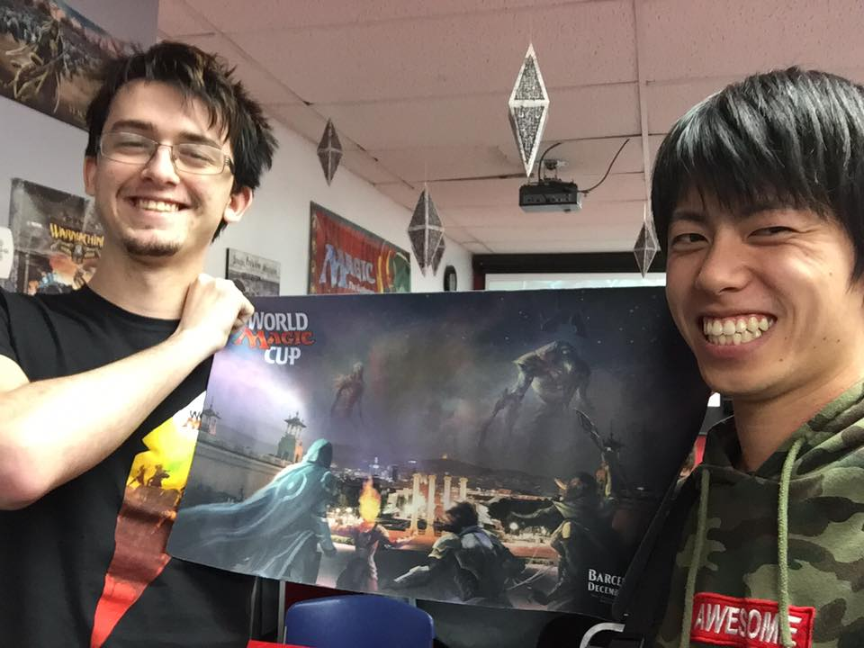

<!doctype html>
<!--[if lt IE 7]>      <html class="no-js lt-ie9 lt-ie8 lt-ie7" lang=""> <![endif]-->
<!--[if IE 7]>         <html class="no-js lt-ie9 lt-ie8" lang=""> <![endif]-->
<!--[if IE 8]>         <html class="no-js lt-ie9" lang=""> <![endif]-->
<!--[if gt IE 8]><!--> <html class="no-js" lang=""> <!--<![endif]-->
    <head>
        <meta charset="utf-8">
        <meta http-equiv="X-UA-Compatible" content="IE=edge,chrome=1">
        <title>マジック経歴</title>
        <meta name="description" content="">
        <meta name="viewport" content="width=device-width, initial-scale=1">
        <link rel="icon" href="favicon.ico">

        <link rel="stylesheet" href="css/bootstrap.min.css">
        <link rel="stylesheet" href="https://maxcdn.bootstrapcdn.com/font-awesome/4.4.0/css/font-awesome.min.css">

        <style>
            body {
                padding-top: 0px;
                padding-bottom: 20px;
            }
        </style>
        <link rel="stylesheet" href="css/bootstrap-theme.min.css">
        <link rel="stylesheet" href="css/main.css">

        <script src="js/vendor/modernizr-2.8.3-respond-1.4.2.min.js"></script>
    </head>
    <body>
        <!--[if lt IE 8]>
            <p class="browserupgrade">You are using an <strong>outdated</strong> browser. Please <a href="http://browsehappy.com/">upgrade your browser</a> to improve your experience.</p>
        <![endif]-->
    <!--
    <nav class="navbar navbar-inverse navbar-fixed-top" role="navigation">
      <div class="container">
        <div class="navbar-header">
          <button type="button" class="navbar-toggle collapsed" data-toggle="collapse" data-target="#navbar" aria-expanded="false" aria-controls="navbar">
            <span class="sr-only">Toggle navigation</span>
            <span class="icon-bar"></span>
            <span class="icon-bar"></span>
            <span class="icon-bar"></span>
          </button>
          <a class="navbar-brand" href="#">Project name</a>
        </div>
        <div id="navbar" class="navbar-collapse collapse">
          <form class="navbar-form navbar-right" role="form">
            <div class="form-group">
              <input type="text" placeholder="Email" class="form-control">
            </div>
            <div class="form-group">
              <input type="password" placeholder="Password" class="form-control">
            </div>
            <button type="submit" class="btn btn-success">Sign in</button>
          </form>
        </div>
      </div>
    </nav>
    -->

    <!-- Main jumbotron for a primary marketing message or call to action -->
    <div class="jumbotron">
      <div class="container">
        <h1>マジック経歴</h1>
        <p>松岡竜嗣(マツオカ　リュウジ)</p>
        <p>社会人2年目、マジック歴5年目です。</p>
      </div>
    </div>

    <div class="container">
      <!-- Example row of columns -->
      <div class="row">
        <div class="col-md-6">
          <h2>年表</h2>

          <table class="table">
            <thead class="thead-inverse">
              <tr>
              <td width="170">当時のエキスパンション</td>
              <td width="50">年齢</td>
              <td>できごと</td>
            </tr>
            </thead>

            <tbody>
              <tr>
                <td>第9版</td>
                <td>12</td>
                <td>近所のスーパーでマジックに出会う。<br>
                ルールが分からず、ゲームをはじめるに至らず。</td>
              </tr>

              <tr>
                <td>テーロス</td>
                <td>20</td>
                <td>地元のカードショップでマジックをはじめる。<br>
                カードは全くなく、お金もあまり無かったため、しばらくはFNMでブードラだけをして過ごす。<br>
                </td>
              </tr>

              <tr>
                <td>タルキール覇王譚</td>
                <td>21</td>
                <td>カナダへ2ヶ月留学。学校の近くのゲームストアに入り浸り英語とマジックを学ぶ。<br>
                </td>
              </tr>

              <tr>
                <td>戦乱のゼンディカー</td>
                <td>22</td>
                <td>家族旅行でフロリダへ。<br>
                  ディズニーランド付近に滞在するも、
                  90分かけて一人でバスを乗り継ぎカードショップへ３日連続で通う。<br>
                </td>
              </tr>

              <tr>
                <td>ゲートウォッチの誓い</td>
                <td>22</td>
                <td>卒業旅行を兼ねてカナダを再訪。カナダのマジック仲間と合流し、陸路でGPデトロイトに向かう。<br>
                  世は青白エルドラージ時代。借り物のナヤバーンでは歯が立たず1-4ドロップ。
                </td>
              </tr>

              <tr>
                <td>カラデシュ</td>
                <td>23</td>
                <td>半年後のGP神戸を見据えてモダン始動。感染を組み、晴れる屋で揉まれる。<br>
                </td>
              </tr>

              <tr>
                <td>アモンケット</td>
                <td>24</td>
                <td>GP一ヶ月を切ってからボロスバーンに切り替えて参戦。<br>
                    メタ読みを的中させ、初日7-2で大満足。
                </td>
              </tr>


            </tbody>

          </table>

          <h2>総括</h2>
          <p>やっと競技イベントの楽しさが分かってきた程度で、特に誇れる成績はありません。<br>
          しかし、マジック仲間の幅が広く、人とつながることも含めてマジックを楽しんでいます。<br>
          </p>


        </div>
        <div class="col-md-6">
          <h2>海外でのマジック</h2>
          <p>21歳の秋にカナダに短期留学に行きました。その時の学校の近くのゲームストアでマジック三昧。</p>
          
          <p>左の彼は2015年のワールドマジックカップのカナダ代表。<br>
            彼もその店によく来ていました。<br>
            22歳冬に卒業旅行を兼ねてカナダを再訪した時に参加者に配布されたマットをもらいました！</p>


          <h2>モダン</h2>
          <p>2017年5月末のGP神戸に向けて半年前からモダンに参入。<br>
            目標は初日抜け、土日を通してマジックを楽しむ。
          モダン資産が全くなかったため、安くて強そうな感染を組み、晴れる屋へ。</p>
          <a href="http://www.hareruyamtg.com/jp/k/kD20671S/">161225</a><br>
          <a href="http://www.hareruyamtg.com/jp/k/kD21109S/">170101</a>
          <p>5回中2回TOP8入りを果たすが、直後にギタ調禁止(実際プッシュが出てきたことのほうが辛い)。
          ゴールデンウィーク前半まで弱体化した感染のソリューションを探すが、見つけられず。<br>
          死の影系のデッキが増えてきていたので、有利が取れるバーンを組みGPへ。<br></p>
          目標の初日抜けを達成。<br>
          目標を持って調整すること、メタゲームを読むことのおもしろさを実感できた大会になりました。

        </div>

        <object width="174" height="200" classid="clsid:d27cdb6e-ae6d-11cf-96b8-444553540000">
           <param name="wmode" value="transparent"/>
           <param name="movie" value="http://pwp.wizards.com/8111355992/Scorecards/Scorecard.swf" />
            <param name="flashvars" value="language=ja-JP&orientation=Portrait" />
             <embed src="http://pwp.wizards.com/8111355992/Scorecards/Scorecard.swf" wmode="transparent" flashvars="language=ja-JP&orientation=Portrait" quality="high" width="174"
height="200" type="application/x-shockwave-flash"
pluginspage="http://www.adobe.com/go/getflashplayer" />
      </object>

      </div>

      <hr>

      <footer>
        <p>&copy; Ryuji Matsuoka 2017</p>
      </footer>
    </div> <!-- /container -->        <script src="//ajax.googleapis.com/ajax/libs/jquery/1.11.2/jquery.min.js"></script>
        <script>window.jQuery || document.write('<script src="js/vendor/jquery-1.11.2.min.js"><\/script>')</script>

        <script src="js/vendor/bootstrap.min.js"></script>

        <script src="js/main.js"></script>

    </body>
</html>
